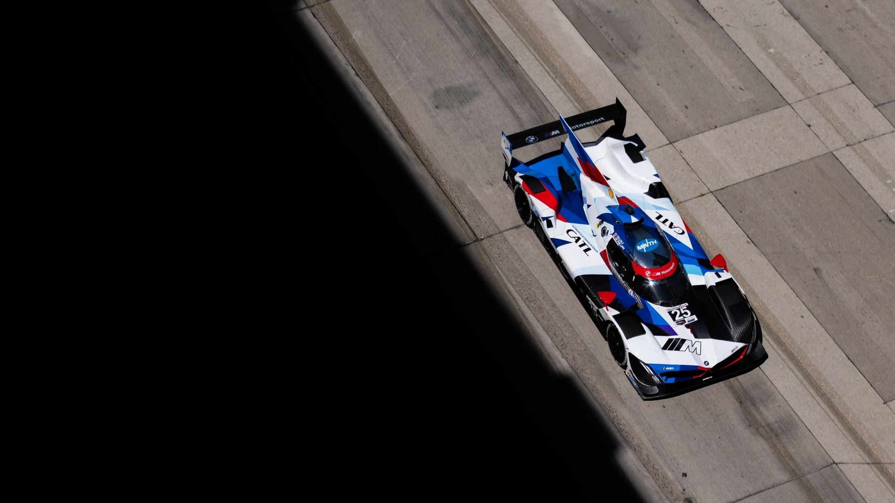

Born on the Track. Built for the road.
BMW M Motorsport represents the highest level of performance, engineering precision, and racing heritage within BMW. What began as a dedicated racing division has evolved into one of the most respected performance brands in the automotive world. Every M vehicle carries the spirit of competition, innovation, and pure driving pleasure. From championship-winning touring cars to modern high-performance production vehicles, BMW M continues to push the limits of speed and technology.
The Origins of BMW M
BMW M was officially founded in 1972 as BMW Motorsport GmbH. Its original purpose was simple: to support BMWs growing presence in professional racing. During the 1970s, BMW quickly established itself as a dominant force in touring car championships across Europe.
The success on the track created demand for road cars that delivered the same racing character. This led to the creation of high-performance production models engineered with motorsport technology. These cars were not just faster versions of standard models — they were designed with precision, balance, and driver engagement in mind.
BMW M became a symbol of performance, defined by innovation and racing DNA.
Motorsport Heritage

Throughout its history, BMW M has competed in multiple motorsport categories including touring car racing, endurance racing, and GT championships. Motorsport has always served as a testing ground for new technologies. Lightweight construction, aerodynamic optimization, improved suspension systems, and high-revving engines were all refined on the track before being adapted for the road. This connection between racing and production vehicles is what makes BMW M unique. Every M car reflects lessons learned from competition — whether it is chassis balance, braking performance, or engine response.
Evolution into the Modern Era
Today, BMW M represents a combination of advanced technology and traditional performance values. Modern M vehicles feature turbocharged engines, intelligent all-wheel drive systems, adaptive suspension, and cutting-edge materials such as carbon fiber. Despite technological advancements, the core philosophy remains unchanged: delivering a driving experience that feels precise, powerful, and engaging. From legendary classics to modern performance icons, BMW M continues to define what it means to build a true driver’s car.
